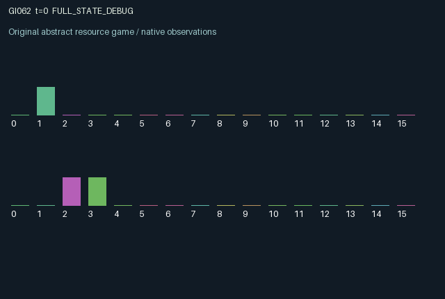

GI062 / LEGACY_ARRAY
astra-d2-00062: Private instructions, delayed messages, and epoch invalidation
2 agents5 actions16 observation columns32 original horizonRuntime: PASS
Release verification episode
Untrained uniform legal actions. Actual JAX state sampled along the full original episode; full-state debug camera. No human performance or learning claim.

Run this game
crucibles play --game 62
Start Python locally, then open the address printed by the terminal. Installation, multiplayer, takeover and keyboard controls →
Objective, rewards & ending
Exact task contract
{
"termination": "Original kernel t >= 32; see mechanism and source"
}Declared per-step reward bounds: -1.0 to 1.0. Observability: source_defined.
Rules
Original mechanism document (historical status wording retained)
# astra-d2-00062: Private instructions, delayed messages, and epoch invalidation This parentless proposal gives each agent a public three-position register and a private instruction for the other agent's register. An agent can execute its own register, but only the partner directly observes the target that determines whether that execution succeeds. Targets remain fixed until their intended recipient executes; every execution, successful or unsuccessful, redraws that recipient's target at its partner and increments the corresponding public epoch. The new target may have the same numeric value, but it belongs to a new instruction epoch. Actions are 0 wait; 1 rotate one's register forward modulo three; 2 rotate it backward; 3 transmit one's current private instruction with its epoch; 4 execute one's current register. All actions are legal. The private instruction held by agent i is for agent 1-i, not for agent i. Execution success therefore compares the executing agent's old register with its partner's old private target. Rotations and execution are exclusive choices on the same turn. Messages enter a two-slot outgoing pipeline. A send occupies slot 1 after the transition, shifts to slot 0 on the next transition, and reaches the partner's inbox on the following one. Delivery overwrites that inbox; without a delivery the old inbox persists. Packets carry the value and epoch that existed when sent. If the receiver executes while an instruction is in flight, the message can arrive with an obsolete epoch. The receiver sees public epochs and an explicit stale-message indicator, so a delayed packet is not silently treated as current information. Epoch validity records provenance, not a guarantee that an obsolete numeric value is wrong. Each agent observes its own outgoing message contents and validity bits but does not directly observe its partner's outgoing payload or private target. The peer's register, target epoch, and previous execution success are public. Public registers can themselves become an implicit signaling channel. The source does not assert that paid transmission is uniquely advantageous or that a memoryless policy can infer every relevant state. Targets are sampled at reset and redrawn using only the supplied transition key. Observation columns 0 through 15 are: normalized time; own and partner registers divided by two; own private instruction divided by two; own and partner instruction epochs divided by 32; inbox value divided by two or zero if invalid; inbox-valid indicator; inbox epoch divided by 32; own outgoing slot-0 value or zero; its valid indicator; own outgoing slot-1 value or zero; its valid indicator; own and partner previous success indicators; inbox-stale indicator. The separate validity bits distinguish an absent message from instruction zero. Reward is 0.6 for own success plus 0.2 for the partner's success, minus 0.25 for own failed execution and 0.03 for transmitting. It is explicitly clipped to [-1, 1]; the success indicators make this a bounded utility formula. Helping the partner can produce a positive team component, whereas uninformed execution risks a loss and changes the instruction that the partner needs to convey. Both roles affect persistent registers, message queues, private-target epochs, and the other's payoff. The generic relation is to decentralized instruction following, delayed communication, and stale-cache coordination. The intended mechanism is asynchronous information with action-triggered invalidation. This is not a claim of nonisomorphism or originality relative to every existing communication game. No benchmark source, other candidate source, or outcome feedback was accessed. The interface contains two agents, sixteen float32 observation features, five legal actions, and a 32-transition clock. Terminal inboxes, queues, registers, and targets are preserved. This is an unexecuted source proposal. No isolated validation, compiler result, pool eligibility, duplicate decision, or learning-effectiveness claim is included.
Commands
0Action 0; see mechanism and source
1Action 1; see mechanism and source
2Action 2; see mechanism and source
3Action 3; see mechanism and source
4Action 4; see mechanism and source
Roles & abilities
agent_0 Original legacy agent; see mechanism and source
agent_1 Original legacy agent; see mechanism and source
Observation permissions
Training receives only the original observation rows. Role cameras use declared visibility; debug cameras are explicitly marked. Local benchmark records log debug exposure and role takeover history.
Exact observation layout
[]
Entity visibility & attributes
[]
Actual verification & provenance
Per-game execution receipt
{
"game": "gi062",
"status": "PASS",
"verification_revision": 2,
"source_sha256": "0bed125df6f0803937b0d45d186fc07e119a4f94379d7db153bf19d2867e5a0c",
"seed": 20261101,
"runtime": {
"jax": "0.4.38",
"numpy": "1.26.4",
"devices": [
"TFRT_CPU_0"
]
},
"dimensions": {
"num_agents": 2,
"observation_size": 16,
"num_actions": 5,
"max_steps": 32
},
"checks": {
"eager_reset": {
"status": "PASS",
"seconds": 0.9445695877075195
},
"observation_spaces_legal_masks": {
"status": "PASS",
"seconds": 0.1517167091369629
},
"eager_step": {
"status": "PASS",
"seconds": 0.7336337566375732
},
"jit_reset": {
"status": "PASS",
"seconds": 0.598520040512085
},
"jit_step": {
"status": "PASS",
"seconds": 0.5348186492919922
},
"eager_jit_integer_parity_float_measurement": {
"status": "PASS",
"seconds": 0.0010056495666503906
},
"jit_vmap_reset": {
"status": "PASS",
"seconds": 0.7069845199584961
},
"jit_vmap_step": {
"status": "PASS",
"seconds": 0.43903613090515137
},
"outer_autoreset_api": {
"status": "PASS",
"seconds": 0.8815491199493408
},
"full_original_horizon_episode_and_render": {
"status": "PASS",
"seconds": 1.9064218997955322
}
},
"human_scores": null,
"browser_controls": "PENDING",
"failures": [],
"elapsed_seconds": 7.401150465011597,
"float_parity_max_abs": 0.0,
"numerical_parity": "EXACT",
"raw_terminal_absorbing": "NOT_PART_OF_ORIGINAL_LEGACY_CONTRACT",
"terminal_outer_reset": "PASS",
"episode_steps": 32,
"scripted_random_returns": [
0.9000000581145287,
0.5200000796467066
],
"terminal": true,
"demo_information": "FULL_STATE_DEBUG",
"demo_frames": 33,
"render_roles_checked": 2
}Chromium control verification
{
"game": "gi062",
"status": "PASS",
"human_scores": null,
"engineering": true,
"checks": [
"catalog_selected_and_real_native_reset",
"dom_queue_and_native_step",
"second_participant_ownership_and_native_joint_step",
"all_roles_individually_controllable_no_role_cap",
"explicit_debug_camera",
"release_to_pure_ai_without_reset"
],
"seconds": 2.8193209171295166
}Original identity and file hashes
{
"id": 62,
"key": "gi062",
"title": "astra-d2-00062: Private instructions, delayed messages, and epoch invalidation",
"summary": "",
"tags": [],
"family": "legacy_array",
"dimensions": {
"num_agents": 2,
"observation_size": 16,
"num_actions": 5,
"max_steps": 32
},
"source_sha256": "0bed125df6f0803937b0d45d186fc07e119a4f94379d7db153bf19d2867e5a0c",
"manifest_sha256": "01927cb99cd5ac52602691b629730615a7fb902d2d34aa54c05839953a0b1d49",
"files": [
{
"file": "candidate.py",
"sha256": "0bed125df6f0803937b0d45d186fc07e119a4f94379d7db153bf19d2867e5a0c",
"bytes": 4632,
"origin": "work/exp_2/astra_generation/discovery_v2/initial/candidate_00062/attempt_00/candidate.py"
},
{
"file": "mechanism.md",
"sha256": "1a110aad630ad781587eb82d3af7b0c594dbb975ab2f90ee158e979dac3cf5d5",
"bytes": 4048,
"origin": "work/exp_2/astra_generation/discovery_v2/initial/candidate_00062/attempt_00/mechanism.md"
}
],
"original_status": "LEGACY_SOURCE",
"original_saved_replay": false,
"release_validation": "PASS",
"human_scores": null,
"browser_validation": "PASS"
}